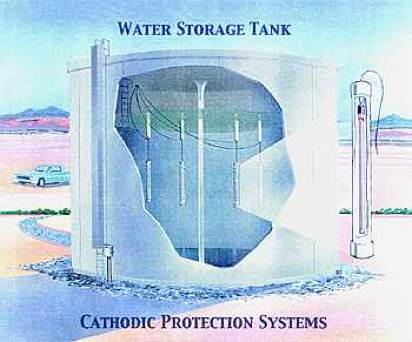

Protecting Water Storage Tanks

Anode Systems offers Cathodic Protection Services which include design, installation, and materials for water storage tanks or any kind of tank. Anode Systems is a trusted supplier since 1985.
Steel water storage tanks will corrode and leak if unprotected against corrosion from chlorinated water on the inside and from the earth on the outside. Anode Systems Company has developed an innovative solution to installing internal corrosion protection anode systems. Fourteen systems have been installed in Colorado, Utah and Wyoming at substantial cost savings to the water districts. The unique feature of the floating and floor mounted anodes is that they are not susceptible to damage from ice forming on the top of the water in the winter. Older systems in which anodes were hung from the ceiling either had to be removed in the fall or risk being pulled down by the ice in the winter. Either system takes only one or two days to install.
Anode Systems Company is engineering new and improved methods for cathodically protecting water storage tanks from corrosion. The three systems illustrated in the following examples are much cheaper to install than conventional systems. They can be leased to make the installation cost affordable to small water districts.
Click on the following links to see examples of systems we have installed:
©Copyright 1999-2009 Anode Systems Company

124 North 22nd Court Grand Junction, Colorado 81501 (970) 243-4149 or (888) 609-9766 toll-free